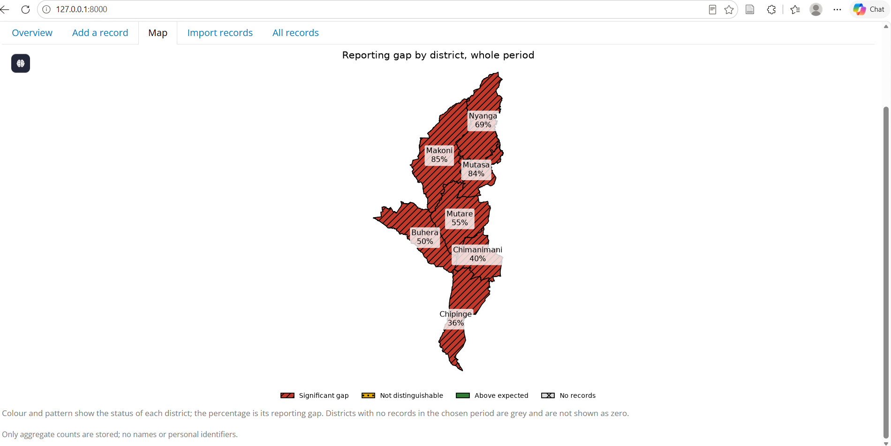

Dashboard Overview

Overview page showing reporting gap summaries and key indicators.
Dashboard Indicators

Summary indicators providing rapid assessment of reporting performance.
Reporting Gap Analysis

District-level comparison of reporting gaps.
District Map

Geospatial visualisation of reporting gaps across Manicaland Province.
Add Record Interface

Manual entry form used to capture new obstetric fistula records.
Import Records Interface

CSV upload module for bulk record importation.
Records Management

Management interface used to review existing surveillance records.
Study Analysis Workflow
This study was conducted through thirteen analytical stages that examined
obstetric fistula reporting patterns, reporting gaps, spatial hotspots,
determinants of reporting, and dashboard development.
- Step 1: Study area preparation and boundary creation.
- Step 2: Construction of district-year analytical tables.
- Step 3: Population and live birth estimation.
- Step 4: Preparation of health facility datasets.
- Step 5: Health facility accessibility analysis.
- Step 6: Integration of poverty and literacy indicators.
- Step 7: Extraction and preparation of obstetric fistula case records.
- Step 8: Whole-period reporting gap analysis.
- Step 8b: Annual reporting gap analysis.
- Step 9: Hotspot detection and spatial clustering analysis.
- Step 9c: Comparison of high-gap and low-gap districts.
- Step 10: Comparison of reporting before and after the COVID-19 pandemic.
- Step 10b: Chi-square analysis of proportions.
- Step 11: Regression analysis of factors associated with reporting patterns.
- Step 12: Dashboard Development and Integration. Results from the analytical stages were integrated into the Obstetric Fistula Reporting Tracker, including visualisations, alerts, district mapping, data entry functionality, data import tools, and records management features.
- Step 13: Preparation of final mapping outputs and visualisations.
Complete Study and Dashboard Source Code
The complete source code used in this study, including all analytical
workflows (Steps 1–13) and the dashboard source code, is available through GitHub.
View Complete Study and Dashboard Source Code